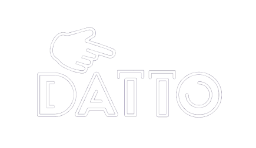

<ion-header>
  <ion-toolbar color="tertiary">


    <a class="datto" slot="start" routerLink="/">
     
    </a>

    <ion-buttons slot="start">
      <ion-menu-button menu="first"></ion-menu-button>
    </ion-buttons>

    <a class="vtl" slot="end" routerLink="/">
      
    </a>
  </ion-toolbar>
</ion-header>
